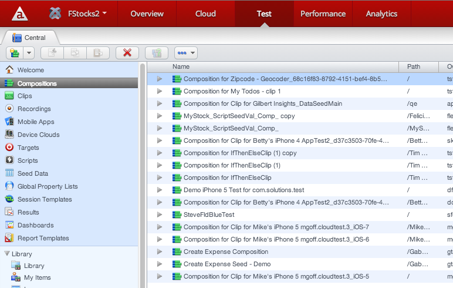

Appcelerator Test
Introduction
Appcelerator Test, enabled by SOASTA’s TouchTest™ mobile test automation solution, provides precision recording, playback and results analysis of automated mobile tests. Appcelerator Test lets you capture, compose and edit tests that include precision gestures, such as swipe, pinch, and pans.
-
To quickly get started recording and playing back tests, see Getting Started with Test .
-
For an short overview of Test concepts, see Testing concepts.
-
For an overview of Test dashboard functionality, see Test dashboard.
Testing concepts
The primary focus of testing is a Composition, which is the test itself. The Composition i s presented in the Composition Editor , which is also the test player, debugger, and where results are analyzed. Use the Composition Editor to add one or more Clips to your Composition, which are arranged in Tracks.

A clip is the basic building block of a composition. The same test clip can be reused in multiple compositions. You use the Clip Editor (shown below) to create your test clips by recording your actions directly from a device. Each action (gesture, input, and so forth) that you record is represented as an editable App Action. App Actions have properties and commands that you can configure to modify their behavior, timing, or output.

When you playback a composition, all the app actions in each clip are executed on the device exactly as recorded. See Getting started with Test for details on creating and using clips and compositions.
Test dashboard
You access all Test functionality from the Test tab of Appcelerator Dashboard. There are two basic views to the Test dashboard: a read-only overview page that presents metrics on all test activity, and a detail view where you actually record and create tests.
Test overview display
When no application is currently selected from the Apps menu, the Test dashboard displays metrics, including the total number of tests that have run, and the average time those tests – compositions in Test terminology – have taken to complete.
Click Compositions Run to view details about the number of compositions that have run, by application or platform. A graph plots the numbers of total number compositions run, by application or platform, over the currently selected time period. Hovering over an inflection point on a graph line displays details about the compositions run at that time, as shown below.
With Compositions Run selected, click Application to view Compositions Run by Application, which displays the number of Completed, Aborted, Failed, and Stopped compositions for each application, and the date and time of the last run. For example, in the following Test dashboard, 40 total compositions have been run across all applications. According to the table, seventeen of those compositions were run against the "KitchenSink" application; of those, eight completed successfully, one failed, and one was stopped by a user.
Similarly, click Platform to view Compositions Run by Platform, which displays the same information as for the By Application view, except that the Last field is replaced by a Top App field that links to the Test page for the application with the most composition runs.

Click Avg. Composition Run Time to view the average time those compositions took to complete, by application or platform. Avg. Composition Run Time by Application displays the average time it took Completed and Failed compositions to complete. for each application, and the date and time of the last run. Compositions Run by Platform displays the same information for each platform, except that the date/time field is replaced by a link to the application with the most compositions. A graph displays the average composition run time, by application or platform, for all compositions in the currently selected time period.
You can export both the time-series data plotted in the graph, or the data displayed in the table. Click the Export Data menu and choose Export Chart Data or Export Table Data, as desired.

Test detail display
When you select an application from the Apps menu ("FStocks2" in the screenshot below), the Test dashboard updates to display the web interface where you create clips, compose compositions, and view results for that application. For more information on using this view, see Getting Started with Test.
